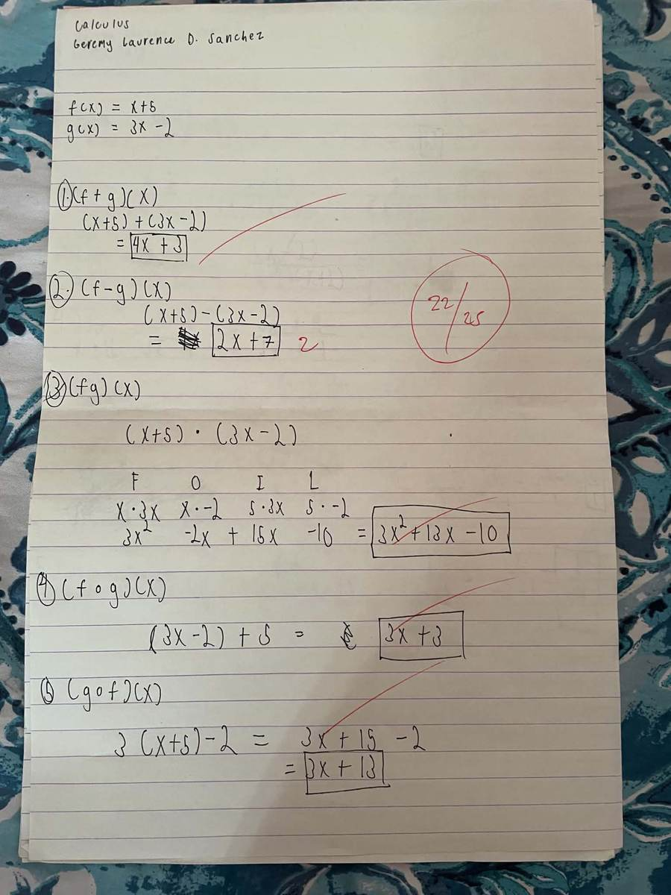
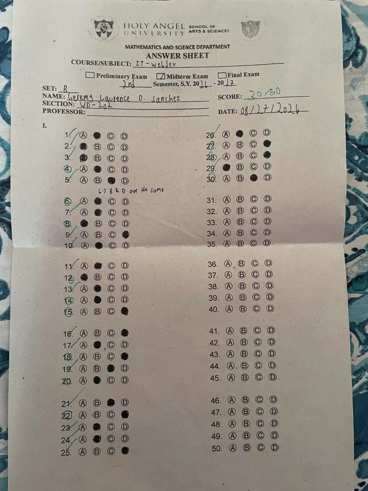
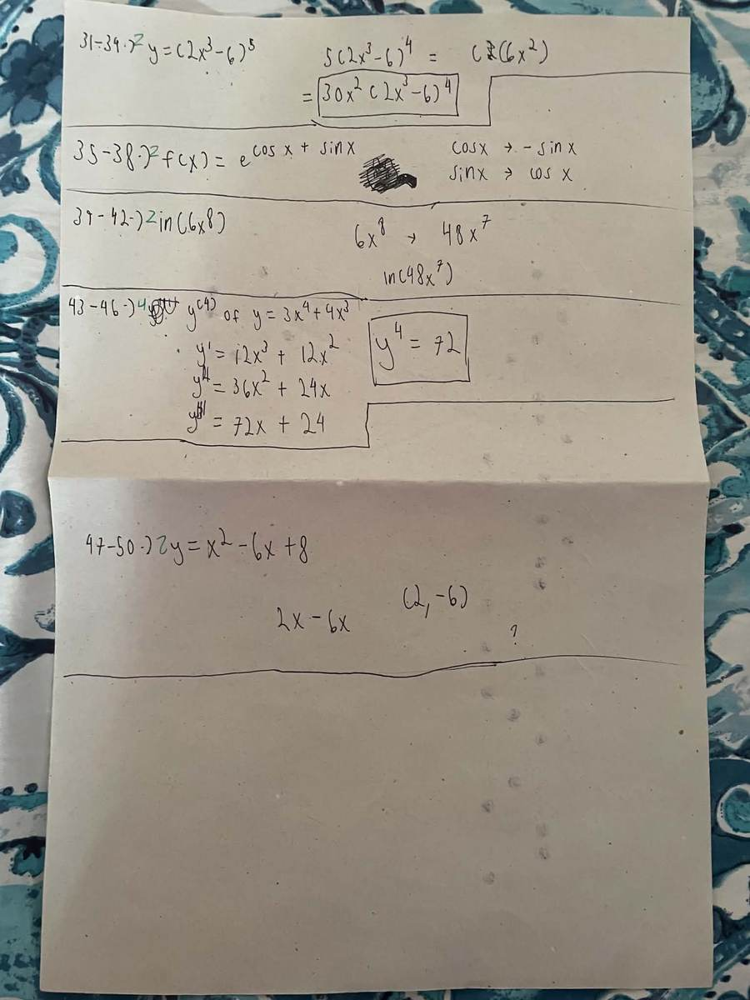
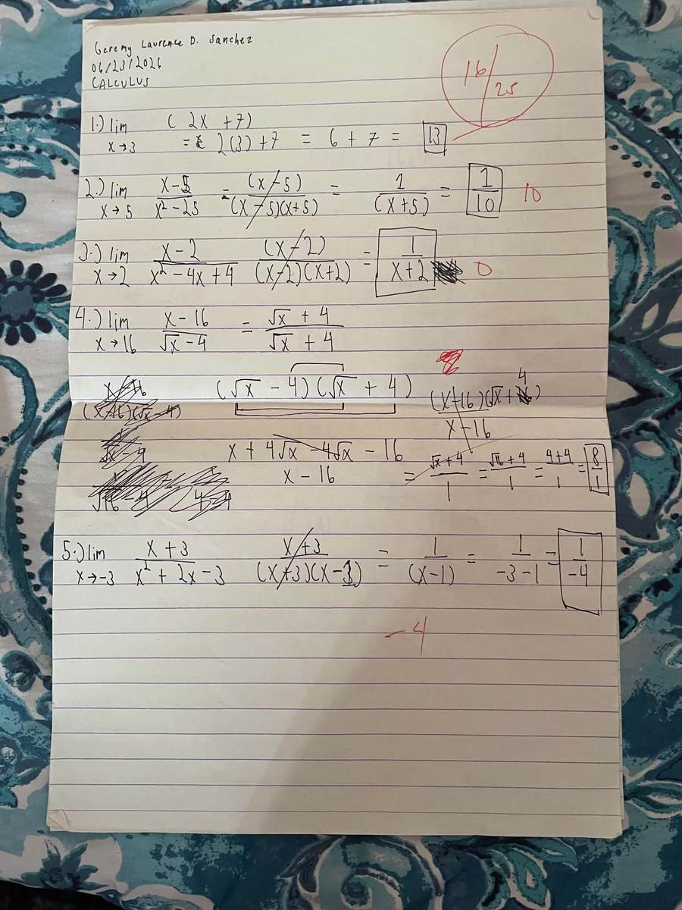
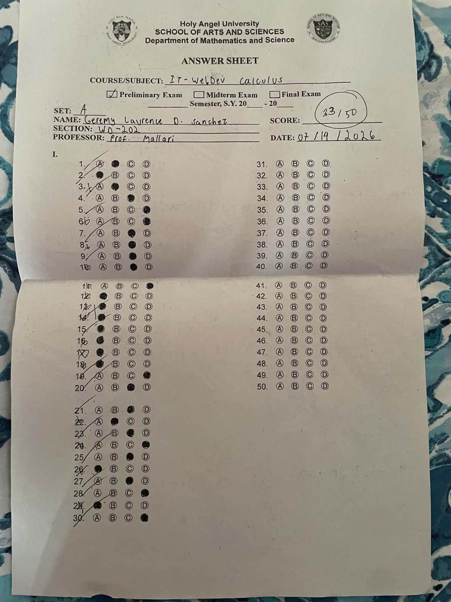
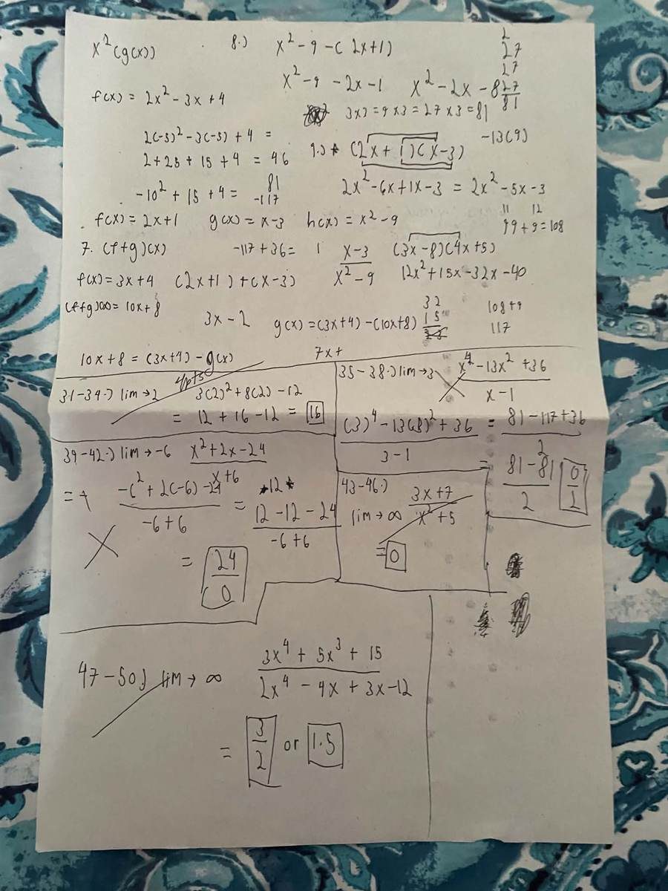
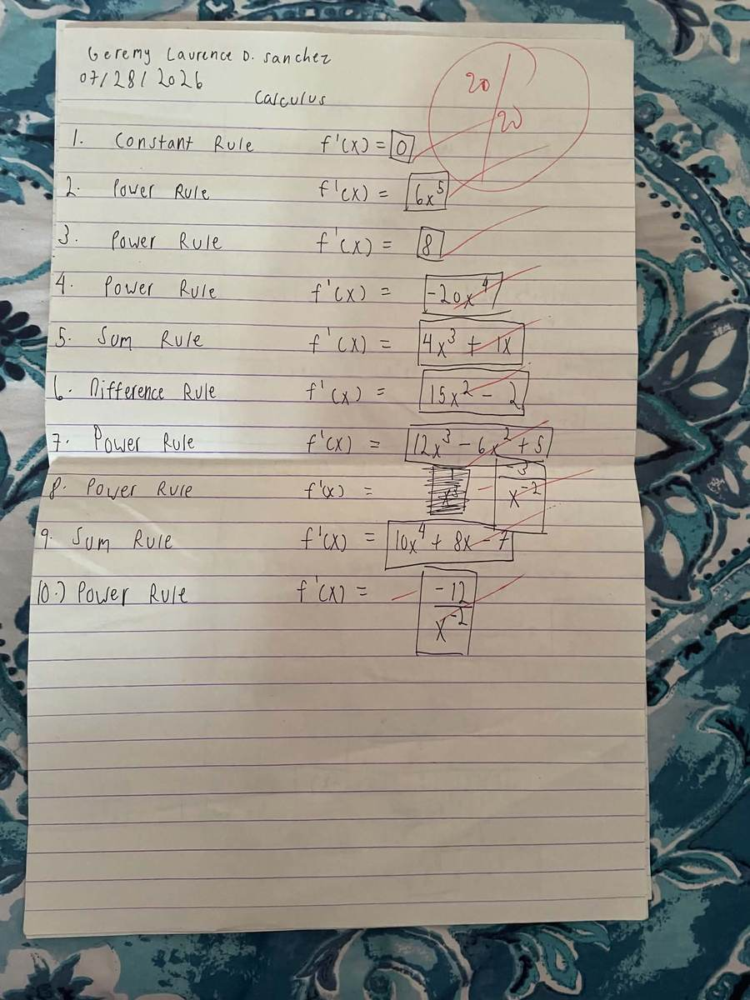
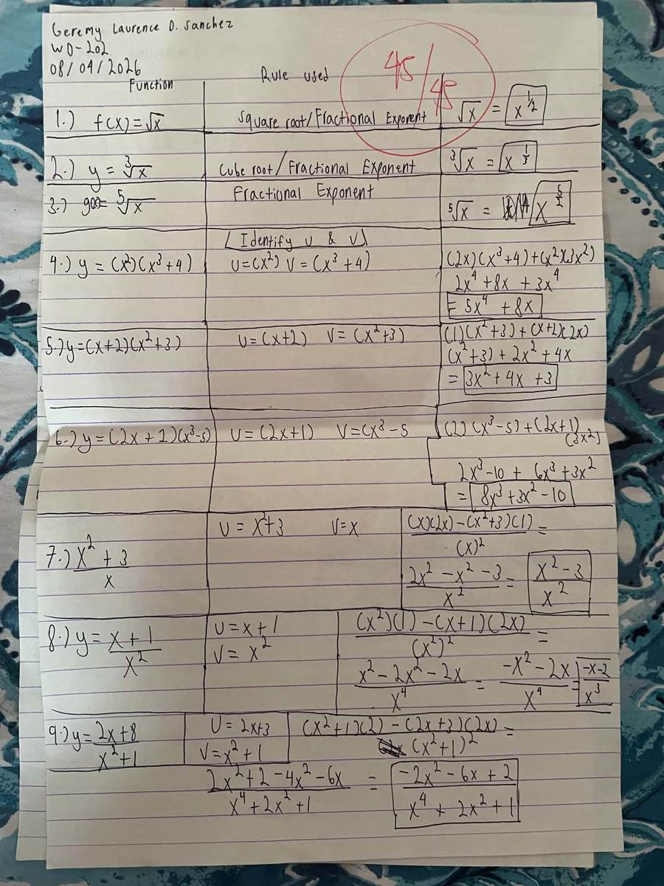
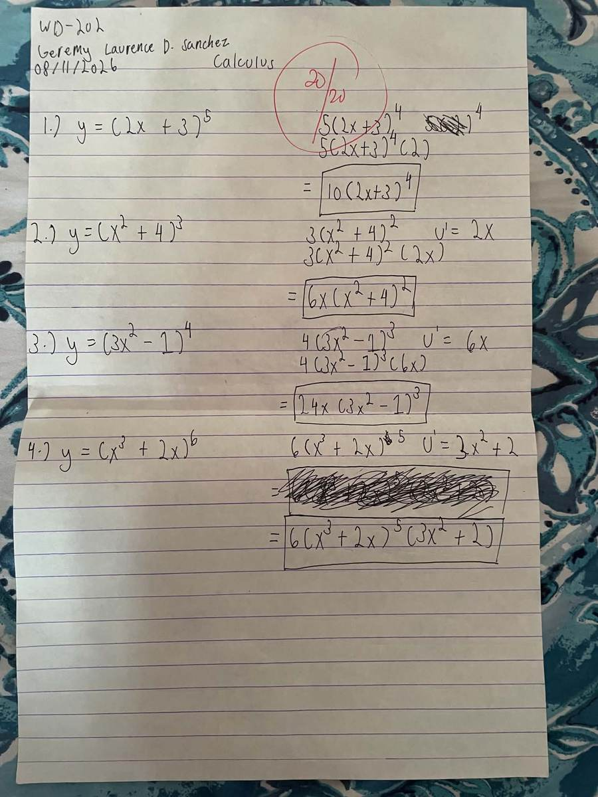

A record of five months spent wrestling with limits, rules, and rewritten proofs — kept the way an old traveler keeps a journal, page by page, mistake by mistake.
I'm Geremy Laurence D. Sanchez, a second-year Web Development student who spends most of his time somewhere between a code editor and a notebook full of scratch work — this portfolio is proof that both are usually open at once. I got into tech because I like taking something that feels abstract and turning it into a page that actually works in a browser, and that same instinct is what got me through this course: Calculus stopped being just symbols on paper once I started treating it like debugging, tracing every step until I could see exactly where the logic broke. Web Development is where my real interest sits, especially the parts that reward patience — layout, interaction, the small details that make a site feel considered instead of thrown together. Calculus, going in, felt like the furthest thing from that world. By the end of the term I saw it differently: derivatives explain the easing on a button, limits explain what a loading state is approaching, optimization is just a fancier word for picking the best trade-off. I'm not going to pretend I loved every worksheet, but I finished this semester with a set of tools I didn't have before, and a better sense of how to sit with a hard problem instead of walking away from it.
Here's the route the course took, roughly in the order I met each idea — and where in the artifacts section you can see it in my own handwriting.
Adding, subtracting, multiplying, and composing functions — the groundwork everything else was built on.
Evaluating what a function approaches, including the direct-substitution, factoring, and rationalizing cases.
Constant, power, sum, and difference rules — the first real toolkit for finding a derivative.
Differentiating functions built out of other functions multiplied or divided together.
Differentiating functions nested inside other functions, and taking a derivative more than once.
Seven pieces of scratch work, kept mostly as they were written — corrections, cross-outs, and all.
Topic: Functions and Function Operations • Score: 22/25
Given f(x) = x + 5 and g(x) = 3x − 2, I worked out the sum, difference, product, and both compositions of the two functions, using the FOIL method to expand the product by hand.

This was my first real look at treating functions as objects you can combine, not just formulas you plug numbers into. Addition and subtraction were straightforward, but the product (f·g)(x) tripped me up until I slowed down and used FOIL the way I would for any binomial multiplication — after that it clicked. My actual mistake was on the difference: I dropped a sign when distributing the negative across (3x − 2), which is why that item was marked down. Once I saw the correction, I started double-checking every distributed negative sign as its own step instead of doing it in my head. The composition items, (f°g)(x) and (g°f)(x), were the most useful part — realizing that order changes the result is basically the same lesson as realizing that the order you chain function calls in code changes the output.
Topic: The Chain Rule & Higher-Order Derivatives • Score: 30/50
The midterm's multiple-choice section covered a mix of earlier topics, and the show-your-work portion on the back (items 31–50) asked me to apply the chain rule, differentiate logarithmic and trigonometric functions, and find higher-order derivatives.


This exam is where I found out how much I still needed to practice applying multiple rules in one problem instead of one rule in isolation. The chain-rule item, y = (2x³ − 6)⁵, I actually got right by working outside-in and multiplying by the derivative of the inner function. Where I lost the most points was on the higher-order derivative question: I mislabeled y⁽⁴⁾ partway through and boxed the third derivative as if it were the fourth, which threw off the final answer even though the differentiation steps themselves were correct. That mistake taught me to label every derivative order clearly as I go instead of trusting that I'll remember which line I'm on. The multiple-choice half also reminded me that a wrong bubble is often a conceptual gap, not a careless one, so I started reviewing my whole answer sheet against the topic list before submitting anything.
Topic: Limits • Score: 16/25
Five limit problems requiring direct substitution, factoring out common binomials, and rationalizing a radical expression to remove a zero-over-zero indeterminate form.

Limits were the first topic that genuinely slowed me down, and this activity shows it. Direct substitution in item 1 was easy, and factoring out the repeated binomial in items 2, 3, and 5 made sense once I recognized the difference-of-squares and trinomial patterns. Item 4 is where it fell apart: I rationalized (√x − 4) correctly but made an arithmetic error simplifying the resulting fraction, and that mistake is written right there in the crossed-out work. What made it harder was that I didn't yet trust the process enough to know when an answer looked wrong — I just wrote down whatever the algebra gave me. Since then I've made it a habit to sanity-check a limit answer by plugging a value close to the target x back into the original expression, which catches exactly this kind of slip before I commit to a final answer.
Topic: Limits • Score: 33/50
The written portion of my preliminary exam covers limits at a point and at infinity, composition of functions used inside a limit, and evaluating a rational function as x approaches a finite value.


I'm going to be honest about this one instead of dressing it up, because the back page speaks for itself: it looks like I lost my mind. There are crossed-out attempts stacked on top of other crossed-out attempts, an "x 12" scribbled next to a wrong answer I circled back to fix, an entire limit-at-infinity problem where I second-guessed a correct 24/0 result, struck it out, and then had to re-derive that it actually simplifies cleanly. Item 39–42 alone has three different numerators tried before I landed on the right one. Looking at it now, that mess is exactly what panicking through a timed exam looks like on paper: I wasn't working a system, I was throwing algebra at the page and hoping something stuck, which is the opposite of everything I now know limits actually reward.
The part that actually saved a lot of these items was falling back on function composition — substituting f(x) into g(x) and h(x) methodically instead of trying to shortcut it — because that was the one piece I'd drilled enough to do on autopilot even while flustered. The lesson this exam taught me had nothing to do with any specific limit rule and everything to do with exam behavior: when I don't trust an answer, my instinct was to attack it from six different angles at once instead of picking one clean approach and following it through. I've since started forcing myself to finish one full attempt, box it, and only then decide whether it needs revisiting — because half of the scratch-outs on this page turned out to be correct on the first try anyway.
Topic: Basic Rules of Differentiation • Score: 20/20
Ten short items applying the constant rule, power rule, sum rule, and difference rule to polynomial and rational functions written with negative exponents.

This was the activity where differentiation finally felt automatic instead of something I had to reconstruct from scratch every time. The constant rule and power rule are almost mechanical once you've done them enough, but items 8 and 10 — rewriting a term with a negative exponent before differentiating — are what I actually had to think about, since it's easy to forget to convert x⁻² back into 1/x² form or to mishandle the negative exponent when bringing it down. Getting a perfect score here mattered less to me than noticing that I'd stopped needing to write out every intermediate step; I could apply the power rule almost as fast as I could read the exponent. That fluency is what let me move on to more complex rules with some actual confidence instead of dread.
Topic: Product Rule, Quotient Rule & Fractional Exponents • Score: 45/45
Nine items: rewriting roots as fractional exponents, identifying u and v before applying the product rule to polynomial products, and applying the quotient rule to three rational functions.

Laying this out as a table — function, rule used, derivative — is what made the product and quotient rules stick. Naming u and v before doing anything else forced me to stop guessing and actually identify the structure of each function first, which cut down on the mix-ups I used to make between the two rules. The quotient rule items (7–9) were the real test, since the formula has more moving parts and a sign that's easy to lose; writing (u′v − uv′)/v² at the top of my scratch work before substituting anything in is the strategy that got me a clean sheet here. Rewriting radicals as fractional exponents in the first three items also removed a mental block I didn't know I had — once a root is just a rational exponent, the power rule applies to it exactly the same way it applies to anything else.
Topic: The Chain Rule & Higher-Order Derivatives • Score: 20/20
Four composite functions differentiated using the chain rule, each broken down by explicitly writing the inner function's derivative before combining it with the outer derivative.

The chain rule is where everything from earlier in the semester — the power rule, recognizing structure, being careful with multiplication — finally came together in one place, and this is the activity where I felt that the most. Writing u′ off to the side before combining it with the outer derivative, the way I did for all four items here, is a habit I picked up specifically because I'd lost points on the midterm from skipping that labeling step. It turned a rule that initially felt like it had too many parts to track into something I could work through in order, every time. If I had to point to one artifact that shows how far I came from the limits activity earlier in the term, it would be this one: same kind of multi-step problem, but this time nothing fell apart along the way.
Calculus stayed pretty theoretical for most of the semester, until I started noticing where it was already sitting inside things I build.
A derivative is just a rate of change, and that's exactly what a performance dashboard is tracking when it shows requests-per-second climbing or a server's response time trending upward. Reading that graph the way I'd read a derivative — is it increasing, decreasing, leveling off — makes it much easier to tell whether a spike is a real problem or normal traffic.
CSS transitions and JavaScript animation libraries are built on easing functions, which are themselves functions nested inside a timing function — the exact structure the chain rule is built to handle. Understanding how an inner function's rate of change affects the outer one helped me get why an "ease-in-out" curve feels different from "linear" instead of just picking one because it looked fine in a demo.
Optimization problems — finding a maximum or minimum given some constraint — are the same shape as decisions I already make when building something: how to get the most performance out of a limited amount of memory, or the shortest load time given a fixed number of assets. Even without formally setting up a derivative for it, the mindset of "what am I maximizing, what am I constrained by" carries over directly.
The clearest evidence of growth in this portfolio is the gap between my limits activity, where I scored 16 out of 25 and made an arithmetic error I didn't catch on my own, and the chain rule and product/quotient rule activities near the end of the term, where I scored 20 out of 20 and 45 out of 45. Limits were difficult for a specific reason: I hadn't yet built the habit of checking whether an answer made sense before writing it in the box, so a rationalizing mistake went uncaught all the way to the end of the problem. By the time I reached the product and quotient rule work, I had picked up a concrete strategy for that same kind of multi-step problem — naming u and v (or the inner and outer function) before touching the formula, and writing out each derivative piece separately before combining them. That single change in approach is the difference between the two scores, more than any difference in raw difficulty between the topics. The midterm exam also played a role: losing points there for mislabeling a higher-order derivative made me start labeling every intermediate result explicitly, which is a habit that shows up clearly in the chain rule activity that followed it. What changed, overall, wasn't that the later topics were easier — the chain rule is objectively more involved than basic limits — it's that I stopped trying to hold every step in my head and started writing structure down first, which is a habit I now use for debugging code just as much as I use it for derivatives.
Going into 2CALC-IT, I expected a semester of memorizing formulas and forgetting them right after the exam. What actually happened was closer to learning a new debugging process: every topic in this course, from limits to the chain rule, turned out to reward the same instinct — break the problem into smaller named pieces, work through them one at a time, and check the result against something you already trust.
Limits were the most challenging topic for me, and my second activity is the clearest evidence of that: a 16 out of 25 where the actual algebra was mostly right but I made a rationalizing error I had no way to catch, because I hadn't yet developed a habit of verifying an answer before committing to it. Ironically, that early struggle is what made everything after it easier. Once I built the habit of double-checking distributed negative signs and sanity-checking limit answers by substituting nearby values, that same discipline carried straight into differentiation, where I went on to score 20 out of 20 on basic differentiation rules, 45 out of 45 on product and quotient rules, and 20 out of 20 on the chain rule.
The topic I understood best by the end was the chain rule, mostly because it's where every earlier skill had to work together at once — recognizing an inner and outer function, applying the power rule correctly to each layer, and keeping track of what multiplies what. Getting comfortable with that made me realize my problem-solving had changed in a specific way: I stopped trying to solve a problem in my head from start to finish and started writing down structure first — naming u and v, labeling which derivative order I was on, boxing intermediate results — before doing any actual computation. That's a mathematical habit, but it's also just a better habit for any complex task, including the coding work I actually want to build a career around.
My mistakes were, honestly, the most useful part of the course. Losing points on the midterm for mislabeling a higher-order derivative is a small, almost embarrassing error, but it's the exact reason I started labeling every step from then on, and that single change is visible in every artifact I completed afterward. My attitude toward Calculus shifted alongside that: it stopped feeling like an obstacle between me and my actual major and started feeling like a second language for describing change, growth, and optimization — three things that show up constantly in web development, whether I'm animating a transition, reading a performance graph, or deciding how to allocate a limited number of API calls.
What I still need to improve is speed under exam conditions; my written work is generally correct, but my exam scores lag behind my activity scores, which tells me I need more timed practice rather than more conceptual review. Going forward, into more advanced coursework and eventually into professional work, I want to carry over the specific habit this semester taught me: write the structure of a hard problem down before trying to solve it, whether that problem is a derivative or a bug.